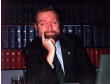

Please note: the AAS Obituaries are temporarily being hosted on this website while their full content is being ingested into the PubPub publishing platform newly adopted by the Bulletin of the American Astronomical Society. When the migration is complete, your existing links will take you to the final, migrated content. Contact peter.williams@aas.org with any questions.
George W. Collins II (1937-2013)
George William Collins, II died of pneumonia in Chardon, Ohio on 12 March 2013 at the age of 75. George suffered from frontal-temporal dementia for several years, and the last six months of his life were spent in an assisted living facility, where he passed away. George was born in Waukegan, Illinois on 18 July 1937. His parents were William George Collins, born in New York City, who was a ceramics engineer and worked for Johns Manville, and Louise Van Horsen Jack, born in Hazelton, Pennsylvania, a graduate RN of Columbia Presbyterian Hospital, and a homemaker. George was predeceased by his two older brothers: Jack Gore Collins (1930-2010), who served as Assistant Attorney for the United States Department of Justice in Portland, Oregon, and Robert Oakley Collins (1933-2008), a Professor of History with expertise in the Sudan, at the University of California, Santa Barbara.
George is survived by his wife Barbara Ann nee Bartels, who he married in 1962. Barbara was born in New York City, and earned an undergraduate degree in Physical Education from Hunter College. She then earned a BS in Physical Education and Kinesiology from the University of Wisconsin in Madison. Before retiring, Barbara taught at the Ohio State University and Ohio Wesleyan University. George and Barbara had two daughters: Carol Louise Collins and Deirdre Ann Collins, deceased 2012.
George graduated from Waukegan Township High School in 1955, after which he enrolled at Princeton University, where he earned an A.B. in Physics in 1959. At Princeton, George worked as a student assistant to Martin Schwarzschild on Project Stratoscope, a balloon-borne telescope for high-resolution observations of the solar atmosphere. Martin Schwarzschild was an early user of electronic computers in his computational studies of stellar structure and evolution and the collaboration with Schwarzscild was to influence George’s future. His senior thesis was on the subject of binary stars.
George completed his PhD at the University of Wisconsin in Madison, in three years, graduating in 1962. His thesis advisor was Robert Bless, and the thesis title is “Emission From a Rapidly Rotating Stellar Atmosphere.” An early class assignment to construct a numerical model of a star led George to learn numerical methods and programming so he could use Wisconsin’s IBM 650 computer for the project. As a result, George was soon the departmental expert in the use of this computer.
Following graduation, George served from 1962 to 1963 as Assistant Professor in the Departments of Numerical Analysis and Astronomy.
In 1963 George began the first of his two astronomical careers in the Department of Astronomy at the Ohio State University (OSU). He was Assistant Professor 1963-1967, Associate Professor 1967-1971, Professor 1971-1991, and Professor Emeritus since 1991. During his time at OSU, he was Senior Visiting Research Fellow in the Astronomy Program of the University of Sussex in the summer of 1982, and Honorary Senior Research Fellow in the Astronomy Program at the University of Glasgow in the autumn of 1989.
In 1991, George took early retirement from OSU and began a second career in the Astronomy Department of Case Western Reserve University (CWRU) as Adjunct Professor, a position he held until the year 2008.
At both OSU and CWRU, he taught courses in theoretical astrophysics, in addition to introductory astronomy classes. At OSU, his commanding bearing and booming voice served him well in the introductory classes, which attracted large enrollments. George capped off his teaching career with “Science, Technology and Government” (POSC 365) for the Department of Political Science in the fall of 2006, and “Weather and Climate” (GEOL 117) for the Department of Geological Sciences in the spring of 2009 and spring of 2010. He advised 4 Master’s degree candidates and nine PhD dissertations at OSU, and 1 PhD thesis at CWRU. George was author or co-author of five books: “The Virial Theorem in Stellar Astrophysics, (1978);” “Encountering the Universe (1982),” with M. Heller and Andrzej Potocki; “Foundations of Celestial Mechanics (1989);” “The Fundamentals of Stellar Astrophysics (1989);” and “Fundamental Numerical Methods and Data Analysis (2003).” The first four books were originally published by the Pachart Publishing House, Tucson, Arizona, and the last by Harvard University Press. All but “Encounters”are now freely available on the internet.
George’s name appeared on some 70 papers published in refereed journals. Many of these were computational studies of the effects of rotation on the atmospheres and spectra of rotating stars, extensions of the subject of his PhD thesis. A frequently visited topic was the nature of SS433, an object so curious that it was featured in a Saturday Night Live skit by Father Guido Sarducci. He also contributed numerous letters, short communications, encyclopedia articles, and book reviews.
George regularly served as a referee for astronomical journals and granting agencies. He presented more than 50 colloquia, and delivered 23 papers at professional meetings.
Throughout his career George was a tireless presenter of public lectures on astronomical and scientific topics. In recognition of this dedication, he was awarded the first J.J. Nassau Service Award by the Cleveland Astronomical Society (CAS). The CAS was founded in 1922 by Jason J. Nassau, long-time head of the astronomy program at CWRU, to disseminate astronomical and scientific developments to interested amateurs. Toward the end of his life, George spoke frequently and effectively about climate change.
Outside of astronomy, George had a number of passions. The Boy Scouts of America honored George with the Silver Beaver Award, in recognition of his long and varied services. He led many extended canoe trips through the Boundary Waters and Canada’s Quetico Provincial Park. When he moved to Geauga County, he helped the Geauga Park District (GPD) develop a canoeing program. George enjoyed participating in winter campouts, and once memorized and recited Robert Service’s famous poem “The Cremation of Sam McGee. George was involved in the planning and early stages of the GPD’s Observatory Park, and the transfer of CWRU’s Nassau Observing Station to the GPD as an addition to Observatory Park.
As an undergraduate, George joined the Princeton Choir in order to avoid compulsory chapel attendance. Ever since, singing was a love of his, and he was a member of the Chagrin Valley Choral Society and the Federated Church Choir of Chagrin Falls. Brahm’s “German Requiem” was a favorite of his.
Other hobbies were stamp collecting (emphasis on U.S. German, and airmail), reading science fiction, and music (folk and classical).
George had a fine mind that was broadly informed and he applied it with discipline to accomplish much during his lifetime. He was generous with his time and his enthusiasms.
Obituary written by: Peter Pesch (Case Western Reserve Univ.)
BAAS Citation: BAAS, 2015, 47, 002